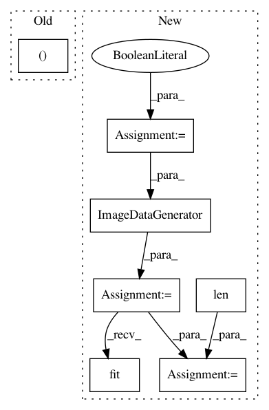

cf0181bb0bf5add0686ca4dd4c03e6fb04a34703,snntoolbox/io_utils/datasets/cifar10.py,,get_cifar10,#Any#Any#Any#,21
Before Change
// np.savez_compressed(filepath+"Y_train", Y_train)
np.savez_compressed(filepath+"Y_test", Y_test)
return (X_train, Y_train, X_test, Y_test)
After Change
// Whether to apply global contrast normalization and ZCA whitening
gcn = True
zca = True
nb_classes = 10
(X_train, y_train), (X_test, y_test) = cifar10.load_data()
// Convert class vectors to binary class matrices
Y_train = to_categorical(y_train, nb_classes)
Y_test = to_categorical(y_test, nb_classes)
datagen = ImageDataGenerator(rescale=1./255, featurewise_center=gcn,
featurewise_std_normalization=gcn,
zca_whitening=zca)
datagen.fit(X_test/255.)
dataflow = datagen.flow(X_test, Y_test, batch_size=len(X_test))
X_test, Y_test = dataflow.next()
if flat:
X_train = X_train.reshape(X_train.shape[0], np.prod(X_train.shape[1:]))
X_test = X_test.reshape(X_test.shape[0], np.prod(X_test.shape[1:]))
In pattern: SUPERPATTERN
Frequency: 3
Non-data size: 7
Instances
Project Name: NeuromorphicProcessorProject/snn_toolbox
Commit Name: cf0181bb0bf5add0686ca4dd4c03e6fb04a34703
Time: 2016-08-22
Author: bodo.rueckauer@gmail.com
File Name: snntoolbox/io_utils/datasets/cifar10.py
Class Name:
Method Name: get_cifar10
Project Name: NeuromorphicProcessorProject/snn_toolbox
Commit Name: afef503d34919fb2febc0b475085f140e1a4e977
Time: 2016-08-31
Author: bodo.rueckauer@gmail.com
File Name: ann_architectures/cifar10/alexnet.py
Class Name:
Method Name:
Project Name: NeuromorphicProcessorProject/snn_toolbox
Commit Name: afef503d34919fb2febc0b475085f140e1a4e977
Time: 2016-08-31
Author: bodo.rueckauer@gmail.com
File Name: ann_architectures/cifar10/cnn.py
Class Name:
Method Name: